Celebración en la recta final

Un corredor levanta los brazos con emoción mientras se acerca a la meta en una avenida rodeada de edificios, reflejando la intensidad y alegría del evento.

Un corredor levanta los brazos con emoción mientras se acerca a la meta en una avenida rodeada de edificios, reflejando la intensidad y alegría del evento.
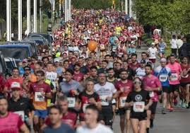
Una enorme cantidad de atletas avanza por un sendero urbano rodeado de vegetación, mostrando la energía colectiva de una carrera multitudinaria.
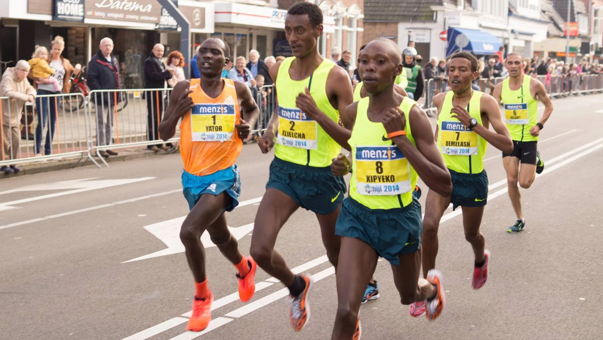
Un grupo de corredores mantiene un ritmo fuerte en una avenida amplia, destacando la competencia por mantenerse en la delantera.
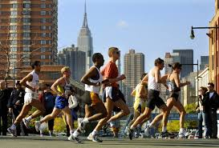
Corredores avanzan con rascacielos al fondo, reflejando la mezcla entre deporte y paisaje urbano característico de las grandes maratones.
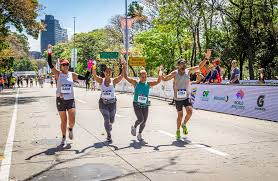
Tres participantes levantan los brazos al cruzar la meta, mostrando la unión y camaradería que caracteriza a muchas competencias populares.
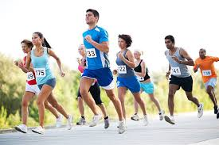
Un grupo de corredores avanza con determinación en un tramo soleado, cada uno marcando su propio ritmo pero avanzando en conjunto.
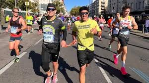
Un pelotón variado de atletas sonríe mientras corre por calles urbanas, reflejando la alegría de participar en un evento deportivo masivo.
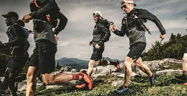
Un grupo de corredores avanza con energía por un terreno rocoso, demostrando camaradería y esfuerzo compartido en plena montaña.
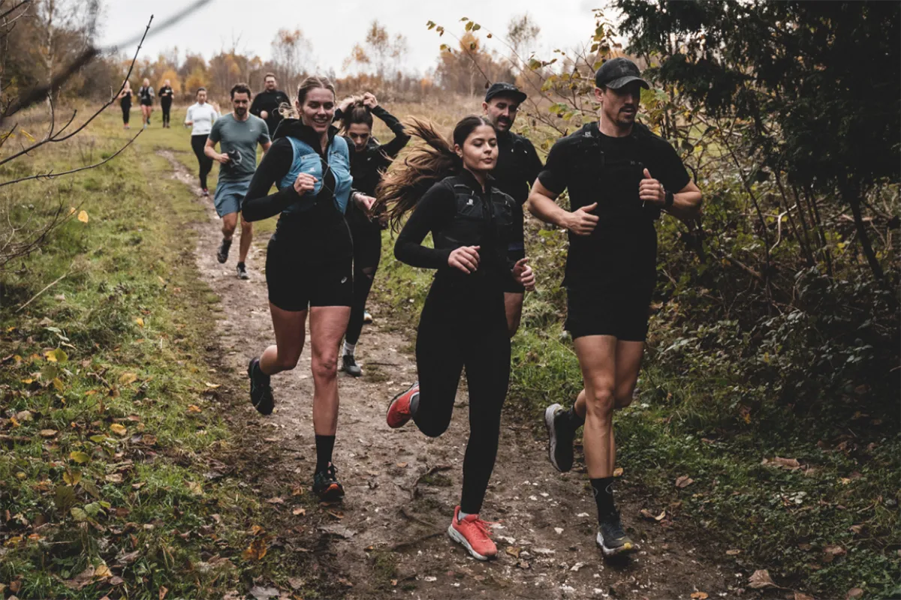
Corredores atraviesan un bosque otoñal, disfrutando de un camino cubierto de hojas y un ambiente fresco ideal para el trail.
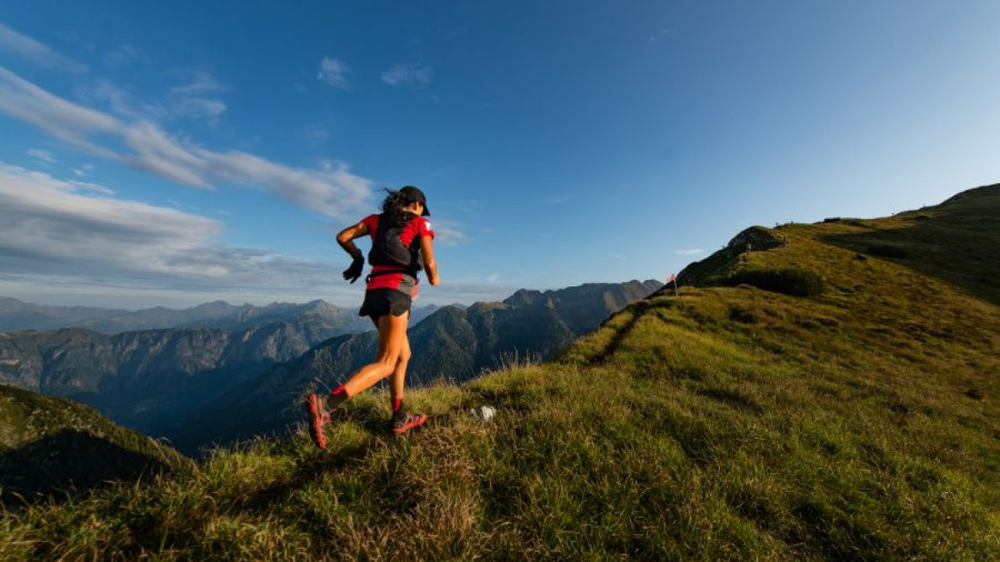
Una corredora recorre una cresta montañosa mientras el sol cae, creando una escena llena de libertad y vistas espectaculares.
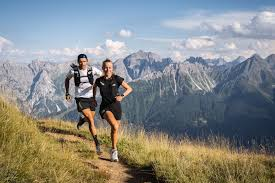
Dos corredores avanzan por una ruta de altura rodeada de picos imponentes, poniendo a prueba su resistencia en terrenos exigentes.
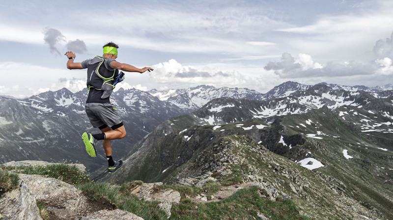
Un corredor celebra la emoción del trail saltando sobre una cima nevada, capturando el espíritu aventurero de la montaña.
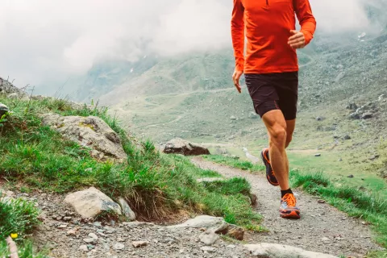
Un corredor desciende por un sendero pedregoso envuelto en neblina, enfrentando un ambiente misterioso y desafiante.